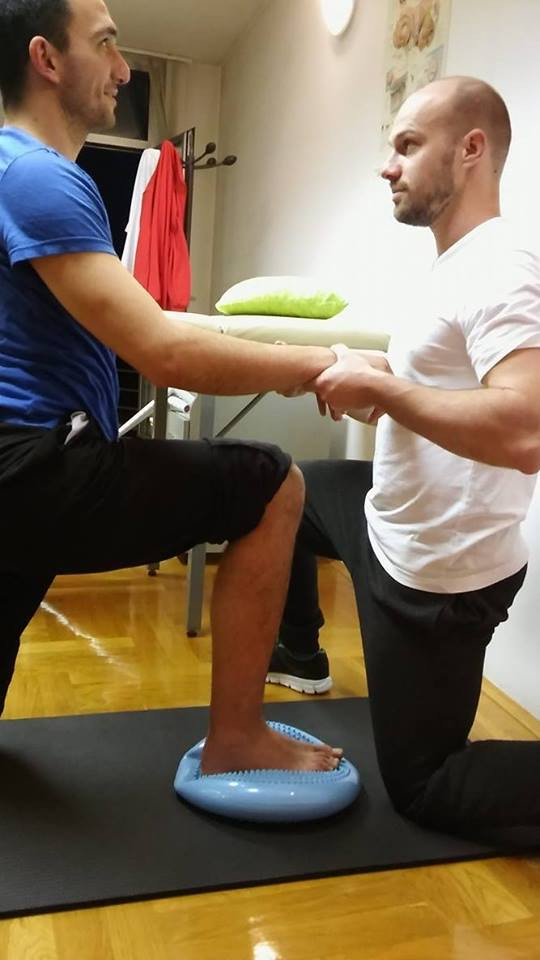
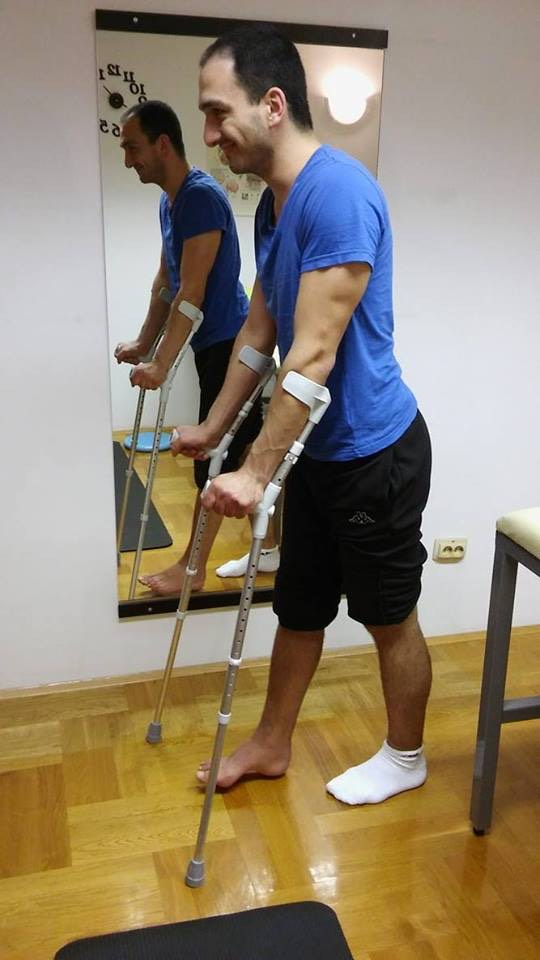
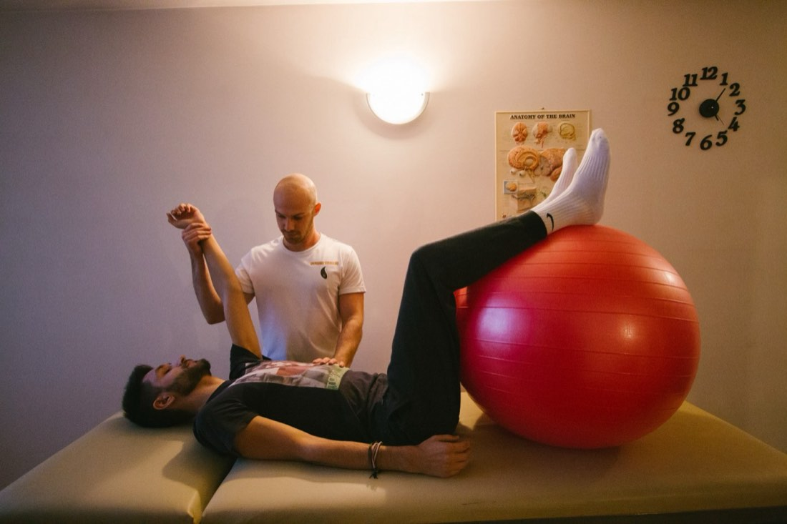
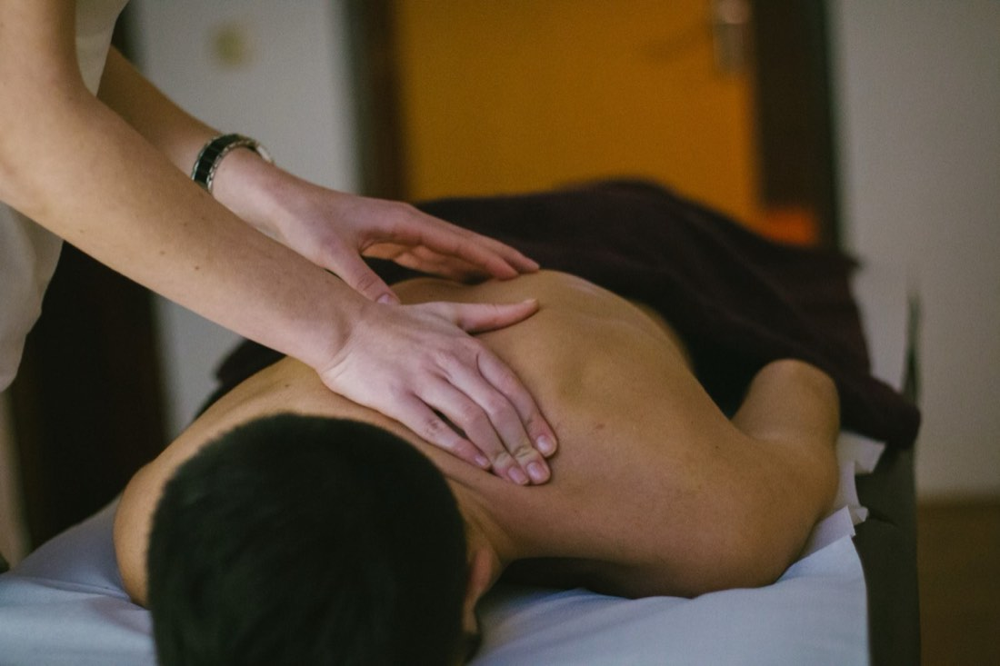
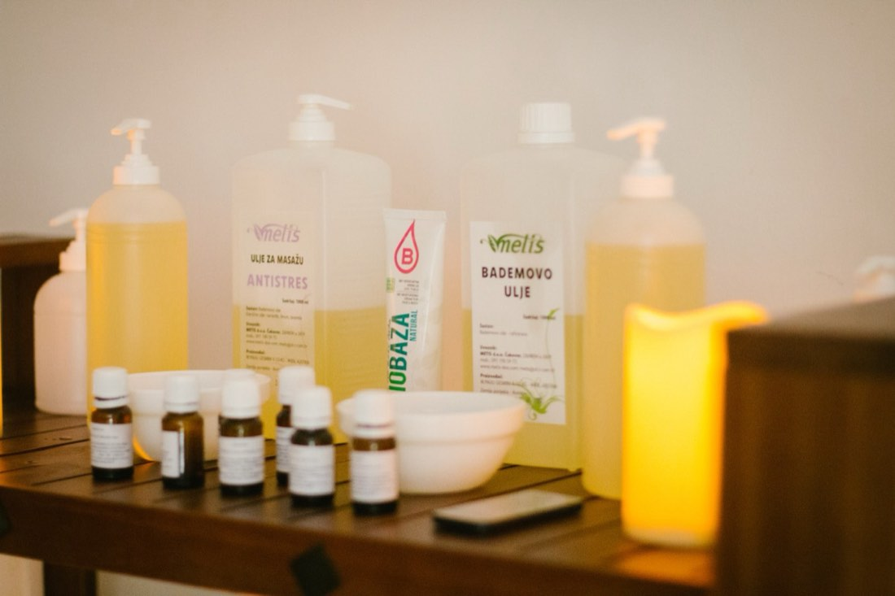
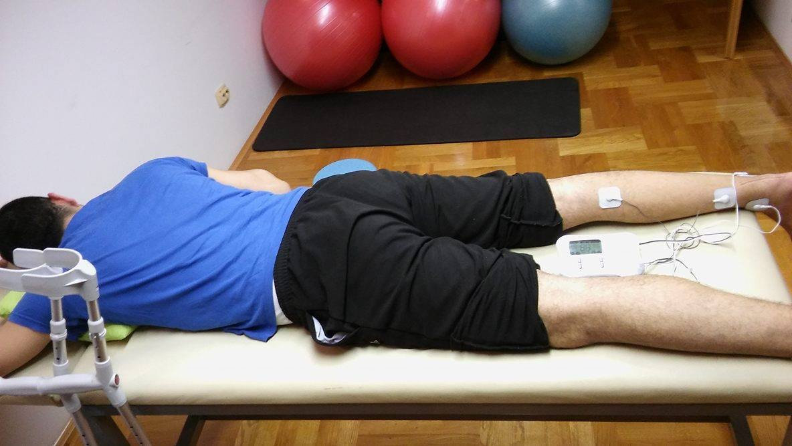
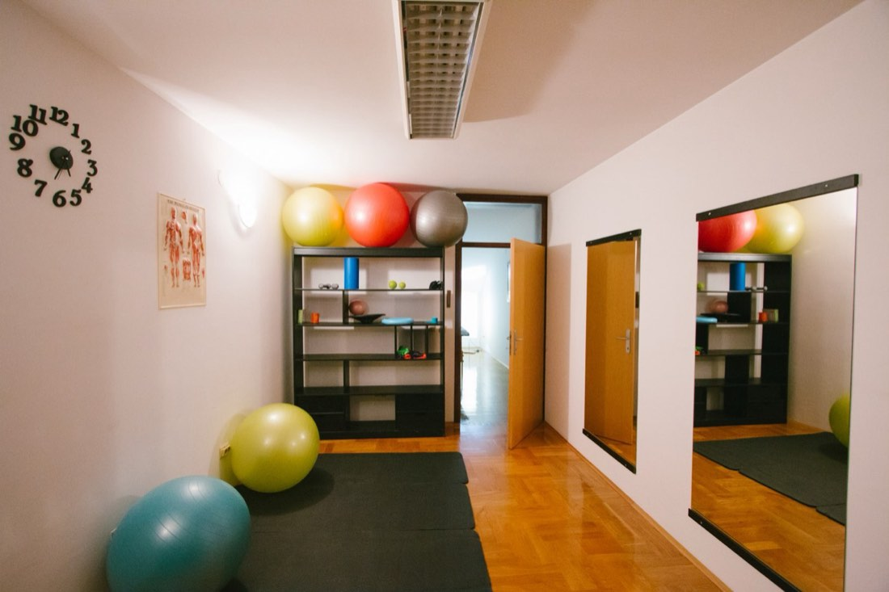

Naslovnica / Usluge
Usluge Studija Vitalis
Korektivni programi, manualna terapija i masaže. Uz svaku uslugu navodimo za koga je i koliko stoji.
Individualni tretman
- Fizioterapijska procjena: uvid u problem, uzimanje anamneze, procjena posture.
- Izrada plana i programa fizioterapije: individualan program vježbi ovisno o vrsti problema.
- Preoperativna rehabilitacija: hod sa štakama, poboljšanje opće kondicije.
- Postoperativna rehabilitacija: povećanje opsega pokreta, povratak snage, fleksibilnosti i funkcije.


DNS vježbe
Procjena i izrada plana programa. Koristi se kod problema s kralježnicom, smanjenog mišićnog tonusa, bolova i ograničenja pokreta kukova i ramena te kod sportaša i rekreativaca (prevencija ozljeda, povećanje sportskih performansi).
DNS nije samo tehnika, već cjelovita strategija za bolje razumijevanje neurofizioloških principa lokomotornog sustava. Obuhvaća teorijsku bazu te vještine pregleda, liječenja i vježbanja (funkcionalni pristup), a usmjeren je na aktivaciju „integriranog sustava stabilizacije”.

Mobilizacija i manipulacija fascije
Fascija je vezivno tkivo koje se nalazi u cijelom tijelu i okružuje mišiće, kosti, organe, živce i krvne žile. Osjetljiva je na bol, sudjeluje u propriocepciji i regulaciji pokreta. Služi kao podrška i zaštita tijela, ali može postati kruta, napeta ili upaljena, što uzrokuje bol i ograničenje pokreta.
Indikacije
- kronična i akutna bol
- bolna stanja kralježnice
- lumboishijalgija
- trzajne ozljede vrata
- tendinopatije
- cervikalni i cervikobrahijalni sindrom
- sportske ozljede i drugi problemi vezivnog tkiva
Tretman fascije može biti dobar izbor za one koji žele poboljšati zdravlje i dobrobit bez lijekova ili kirurških zahvata.

Pet vrsta masaže
Masaža opušta napete mišiće, pospješuje protok krvi i oslobađa od psihičke i fizičke napetosti. Biramo tehniku prema tome što vam treba: oporavak, rad sa sportskim opterećenjem ili opuštanje.

Medicinska masaža
Osnovna manualna tehnika: glađenje, gnječenje, trljanje i protresanje u smjeru protoka krvi prema srcu. Opušta napetost u mišićima, pospješuje cirkulaciju i smanjuje bol.
Sportska masaža
Energičnija od medicinske, za jake mišiće sportaša. Zagrijava i omekšava tkiva, a usmjerena je i na tetive i ligamente koji su u sportu izloženi naprezanjima.
Antistresna masaža
Kombinacija tehnika masaže uz eterična ulja i opuštajuću glazbu u toplom prostoru, kod glavobolje, napetosti i ukočenosti ramena i vrata.
Masaža lica i glave
Nježno skida odumrle stanice kože i potiče mikrocirkulaciju. Masažom glave opuštenost se širi na cijelo tijelo.
Masaža stopala
Jedna od najomiljenijih masaža, sa snažnim relaksirajućim učinkom na cijeli organizam.
Limfna drenaža uređajem Normatec
Limfna drenaža u fizioterapiji ubrzava oporavak, smanjuje oteklinu i poboljšava cirkulaciju kod različitih stanja i ozljeda.
Normatec koristi zračne komore unutar manšeta koje se ritmički napuhuju i prazne. Taj tlak potiče protok krvi i limfe u tretiranom području, smanjuje oteklinu i pomaže revitalizaciji mišića. Sustav se prilagođava pa terapeut može ciljati određeni dio tijela, kod sportskih ozljeda, nakon operacija te kod limfedema ili edema.

TENS i Compex
TENS se temelji na elektroanalgeziji: stimulacijom A živčanih vlakana koči se rad C vlakana koja prenose bol prema višim razinama živčanog sustava.
Indikacije za TENS
- akutna i kronična bol
- reumatske bolesti
- traume
- ortopedske bolesti
- kirurgija
- neurologija
- ginekološke i onkološke bolesti

Grupne vježbe
Idealne za osobe srednje i starije životne dobi: za bolje zdravlje, fleksibilnost, održavanje mišićne jakosti i prevenciju osteoporoze. Grupe su male, do 7 korisnika, uz nadzor fizioterapeuta.
